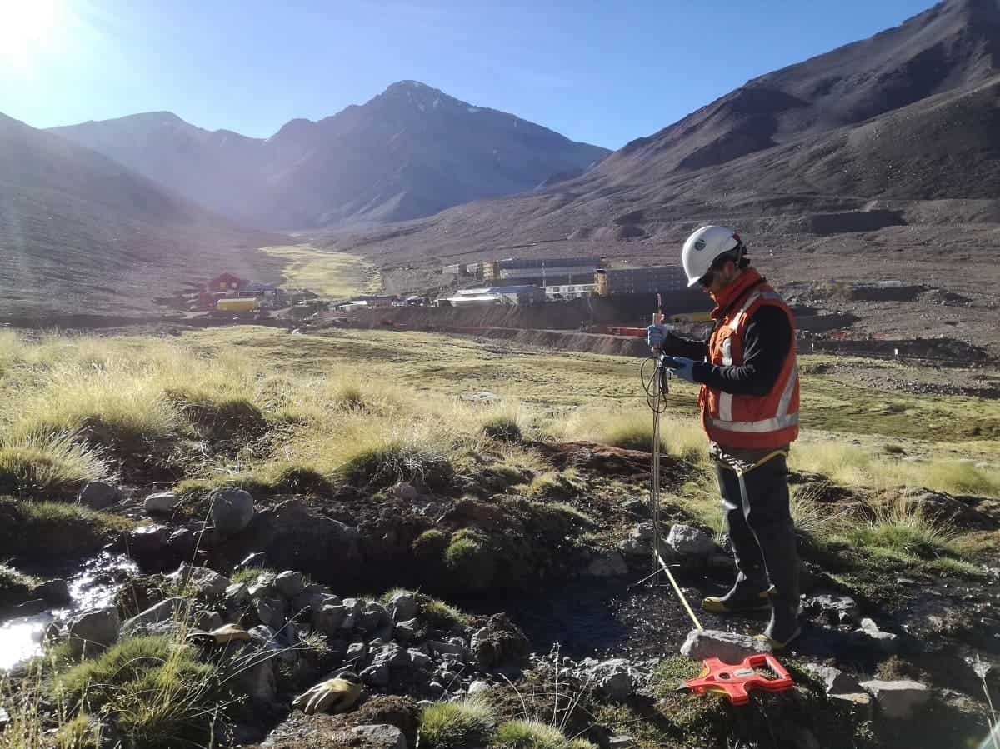
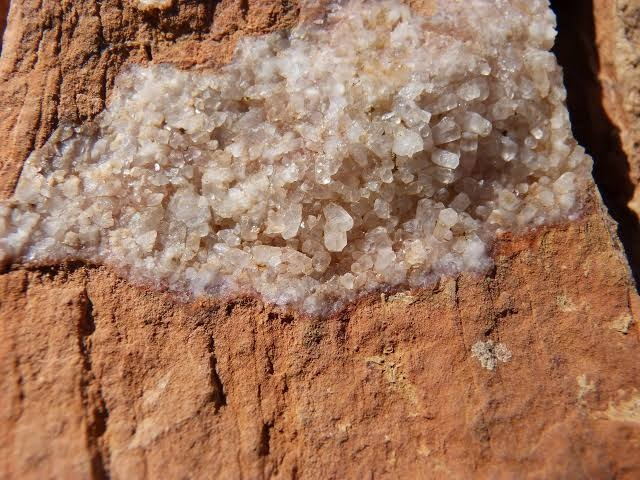
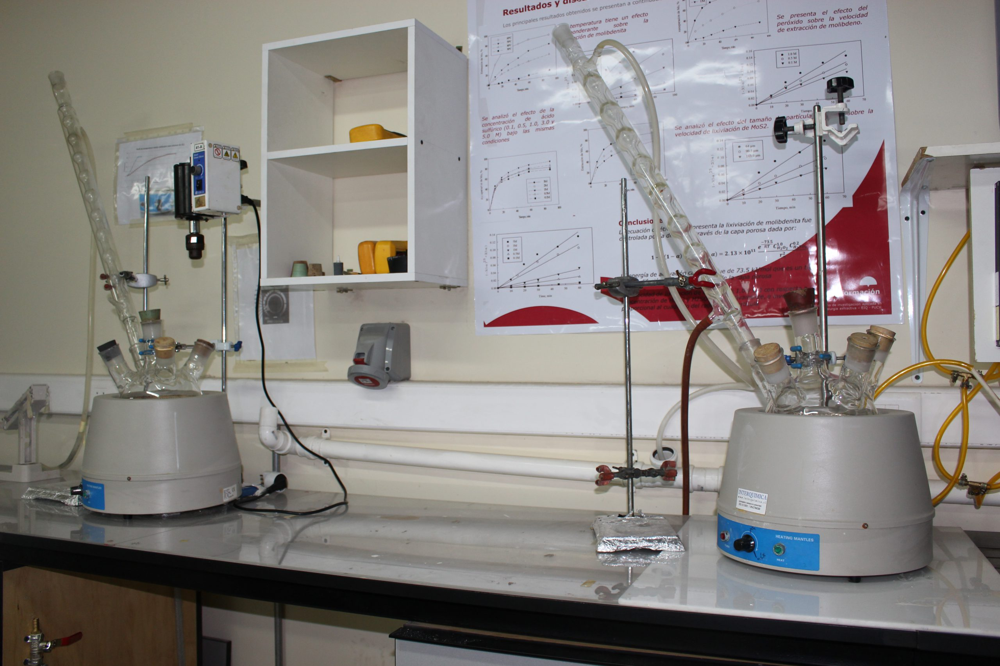

El Laboratorio de Geoquímica cuenta con una robusta infraestructura tecnológica dedicada a la caracterización fisicoquímica y cuantificación elemental en matrices de agua y suelo. Apoyados en instrumentación espectrométrica de vanguardia —destacando la emisión atómica por plasma de microondas (MP-AES) y la espectrometría de absorción atómica (AAS)— junto con sistemas electrométricos multiparamétricos, garantizamos una alta precisión analítica. Nuestra capacidad integral abarca desde la determinación de metales traza y macronutrientes, hasta evaluaciones físicas fundamentales de suelos, encontrándonos en constante expansión metodológica para responder a las exigencias agronómicas y ambientales actuales.
Conocer Nuestros ServiciosAgilent MP-AES 4210
Matrices analizadas: Minerales y Aguas.
Parámetros: Molibdeno, Níquel, Selenio, Estroncio, Potasio, Manganeso, Cadmio, Zinc, Plomo, Bario, Cobalto, Cobre, Hierro, Aluminio, Calcio, Cromo, Arsénico.
Agilent AA240
Matrices analizadas: Minerales y Aguas.
Parámetros: Potasio, Zinc, Cobre, Calcio, Oro, Plata.
Hanna HI9829
Matrices analizadas: Minerales y Aguas.
Parámetros: Conductividad eléctrica, pH, Oxígeno disuelto.
Parámetros: Densidad de suelos, Textura, Granulometría.
Nuevas metodologías en desarrollo



La seguridad es nuestra máxima prioridad. Para acceder a las diferentes áreas del Laboratorio de Geoquímica, todas las visitas deben portar obligatoriamente el siguiente Equipo de Protección Personal (EPP) según el área:
Dirección: Av. Atahualpa 1050, Ciudad Universitaria
Teléfono: 976473952
Correo: jhoeltasillamoreno@gmail.com
Descarga, imprime y completa los siguientes documentos. Son indispensables para procesar la recepción de tus muestras en el laboratorio.
Documento legal que garantiza la trazabilidad e integridad de las muestras desde la recolección hasta su análisis.
Descargar PDFPlantilla estándar para la identificación unívoca de cada muestra. Debe ir adherida de forma segura a cada envase.
Descargar PDF